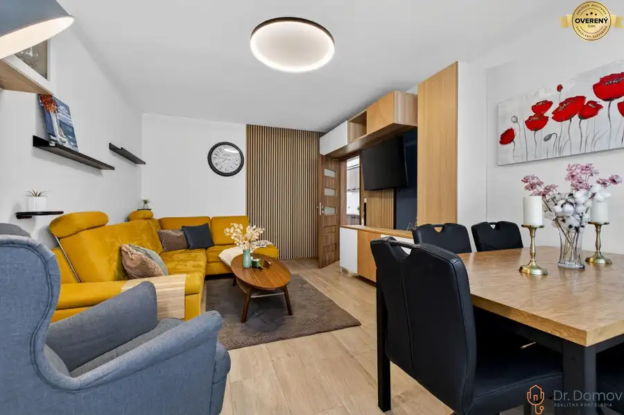
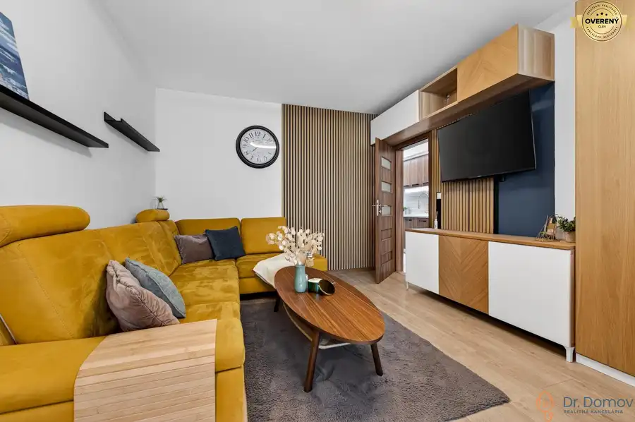
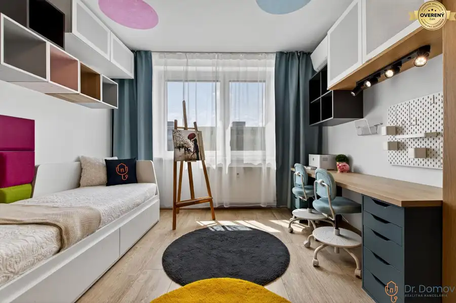
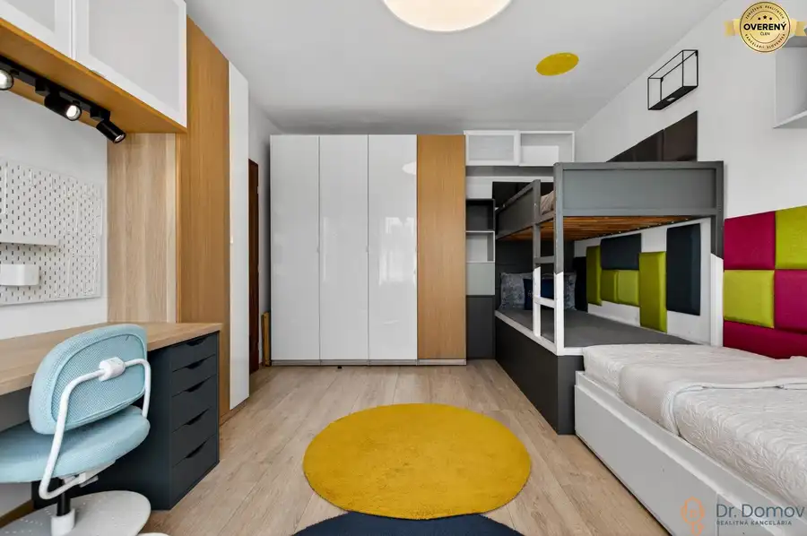
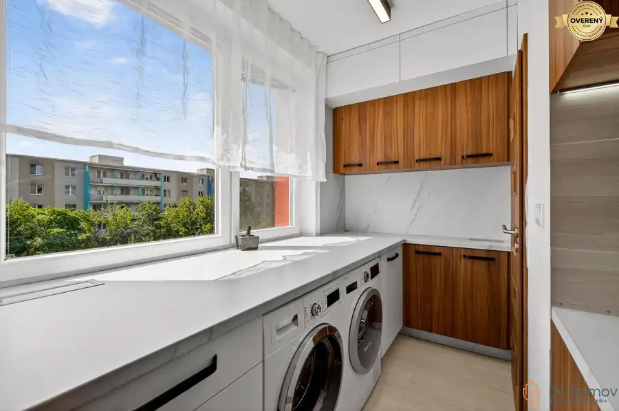

NA PREDAJ MODERNÝ A VEĽKÝ 3-IZBOVÝ BYT, KOMPLETNÁ REK., SPUTNIKOVÁ UL.
Ružinov, Bratislava






- Dispozícia3-izbový
- Plocha75.58 m²
- Poschodie5. z 8
- Stavúplne prerobený
- Vlastníctvoosobné
O nehnuteľnosti
Dr. Domov ponúka na predaj moderný a veľký 3-izbový byt s príjemným výhľadom v bratislavskej mestskej časti Ružinov, časť Ostredky – na ulici Sputniková.
Je situovaný na 5. poschodí v 8-poschodovom kompletne zrenovovanom bytovom dome s novým výťahom (2021) a s menším počtom susedov. Nehnuteľnosť prešla kompletnou rekonštrukciou, ktorá spĺňa moderné požiadavky pre rodinné bývanie. Rekonštrukcia prebehla v roku 2020. Dispozične pozostáva z priestrannej vstupnej chodby s úložným priestorom a so vstupom na samostatnú toaletou s umývadlom. Z predsiene prechádzame do vybavenej spálne, druhá spálňa poslúži podľa preferencií ako detská izba, hosťovská izba či pracovňa. Centrum bytu tvorí vzdušná obývacia izba kompletne a moderne zariadená, doplnená o jedálenskú časť s jedálenským stolom a s výstupom na zasklenú loggiu. Kuchyňa je moderná a vybavená podsvietenou kuchynskou linkou so všetkými zabudovanými spotrebičmi – zabudovanou väčšou chladničkou s mrazničkou, vstavanou el. rúrou, indukčnou varnou doskou (plyn na byte je odstavený, takže všetko funguje na elektrinu), vstavanou mikrovlnnou rúrou, veľkou umývačkou riadu, kuchynským drezom a kuchynským kútom vyhotoveným na mieru s práčkou a sušičkou. Z kuchyne je ďalej prístup do kúpeľne s vaňou a s dvoj-umývadlom. Nehnuteľnosť disponuje novými klimatizačnými jednotkami zn. Daikin v každej obytnej izbe aj kuchyni. Orientácia je na dve svetové strany, na Západ a Východ.
Príslušenstvom je aj murovaná pivničná kobka na 1. NP bytového domu o väčšej výmere.
Byt sa predáva kompletne zariadený ako môžete vidieť na fotografiách.
Bytový dom prešiel taktiež kompletnou obnovou – je zateplený z oboch strán, so zrekonštruovanou strechou, boli vymenené stúpačky, disponuje udržiavanými spoločnými priestormi a novým výťahom. Hneď vedľa bytového domu sa nachádza väčšie aj menšie parkovisko pre rezidentov (PAAS) a mnohé služby poskytnuté obyvateľom – posedenie, park s detským ihriskom priamo pred bytovým domom, dostatok zelene a zelených plôch na športovanie, voľnočasové aktivity, prechádzky a venčenie domácich miláčikov.
ZÁKLADNÉ ÚDAJE:
* lokalita: Sputniková ul.; Bratislava – Ružinov
* rodinná a vyhľadávaná časť Ružinova, časť Ostredky
* stav: kompletná rekonštrukcia (2020)
* klimatizovaný – 4 x klimatizačná jednotka zn. Daikin
* poschodie: 5/8
* celková plocha bytu: 78,47 m² s príslušenstvom
* úžitková plocha bytu: 75,58 m²
* plocha loggie: 2,89 m²
* plocha pivnice: 2,97 m²
* orientácia: Západ a Východ
* moderné materiály a prevedenie
* kompletne zariadený – v cene
* vyhľadávaná lokalita
* kompletná občianska vybavenosť
LOKALITA A OKOLIE:
Byt a bytový dom sa nachádzajú vo vyhľadávanej a obľúbenej mestskej časti Ružinov, ktorá zabezpečí pestrú občiansku vybavenosť a dostupnosť na skok od centra hlavného mesta. Okolie poskytuje kvalitné rodinné bývanie (nákupné centrum AVION Shopping Park, IKEA, obchody LIDL, Terno, lekárne, knižnica, pošta. V bezprostrednej blízkosti detské ihriská, mnohé reštaurácie a kaviarne lokálneho charakteru – Old Brick Pub, PLANETKA Restaurant & Bar, Stredná priemyselná škola stavebná a geodetická a mnohé iné). Športové vyžitie ulahodí aj športovcom, ktorý neustále potrebujú pohyb, fitness centrá v okolí, množstvo parkov s možnosťou prechádzok a dostupnosť Štrkoveckého jazera). Lokalita zabezpečí pohodlné a bezproblémové dopravné napojenie do centra mesta autom aj mestskou hromadnou dopravou. Zastávky MHD na dva smery sú vzdialené do 5 minút chôdze (350 m) – linky č. 39, 63, 163 a nočné spoje N74. Do 11 minút sa nachádza električková zástavka linky č. 9. Obchodné centrum AVION Shopping Park je vzdialené len pár zastávok MHD, do 6 minút autom.
POHĽAD MAKLÉRA:
Ak hľadáte moderné rodinné bývanie spojené s výbornou lokalitou a s dobrým pôdorysom tak na Sputnikovej ho nájdete. Byt je vzdušný a rekonštrukcia osloví mladé rodiny a páry a ktorá bude spĺňať štandard ešte dlhé roky. Kvalitu lokalite dodá kompletná občianska vybavenosť a prítomnosť parkov a zelene. Najväčšími výhodami danej nehnuteľnosti je rekonštrukcia, kuchyňa na mieru, plne klimatizovaný priestor, obývačka s jedálenskou časťou, zasklená loggia s príjemným výhľadom a murovaná pivničná kobka.
Samozrejme sa treba presvedčiť osobne na obhliadke.
Odporúčam vidieť!
CENA: 314.900,-EUR
V cene je zahrnutý bezplatný právny servis zabezpečený advokátskou kanceláriou ako aj vypracovanie zmluvy o budúcej zmluve, kúpno-predajnej zmluvy, návrhu na vklad do katastra nehnuteľností a kompletný servis financovania a plynulý servis spojený s prevodom vlastníckeho práva nehnuteľnosti.
Teším sa na naše stretnutie!
© Text a fotografie sú autorským dielom a majetkom realitnej kancelárie Dr. Domov
Parametre
- Celková rozloha
- 78.47 m²
- Úžitková plocha
- 75.58 m²
- Poschodie
- 5/vyššie poschodie
- Počet poschodí
- 8
- Počet izieb
- 3
- Vlastníctvo
- osobné
- Stav
- úplne prerobený
- Status
- aktívne
- Odvoz odpadu
- áno - separovaný
- Plyn
- nie
- Internet
- lokálny poskytovateľ
- Kúpeľňa
- vaňa
- Vykurovanie
- spoločné
- Lódžia
- áno - 1
- Pivnica
- áno
- Výťah
- áno
- Parkovanie
- verejné
- Postavené z
- panel
- Zariadenie
- zariadený
- Zateplený objekt
- áno
- Klimatizácia
- áno
- Káblová televízia
- áno
- Energetický certifikát
- nie
- Bezbariérový prístup
- áno
- Okná
- plastové
- Orientácia
- východ/západ
- Dátum zverejnenia
- 2026-05-25
Kde to je
Mohlo by Vás zaujímať
 OstatnéNové
22 000 €NA PREDAJ GARÁŽOVÉ STÁTIA V PODZEMNEJ GARÁŽI V PROJEKTE NOVÉ ŠUTY – BA
Vajnory, Bratislava
OstatnéNové
22 000 €NA PREDAJ GARÁŽOVÉ STÁTIA V PODZEMNEJ GARÁŽI V PROJEKTE NOVÉ ŠUTY – BA
Vajnory, Bratislava
 Nebytové priestoryNové
160 000 €NA PREDAJ NEBYTOVÉ PRIESTORY NA KRESÁNKOVEJ ULICI V BRATISLAVE
Karlova Ves, Bratislava
78.65 m²
Nebytové priestoryNové
160 000 €NA PREDAJ NEBYTOVÉ PRIESTORY NA KRESÁNKOVEJ ULICI V BRATISLAVE
Karlova Ves, Bratislava
78.65 m²
 BytNové
284 990 €REZERVOVANÉ! ŠTÝLOVÝ A VEĽKÝ 3-IZBOVÝ BYT, KOMPLETNÁ REK., LAMAČ - BA
Lamač, Bratislava
3-izbový77 m²4. podlažie
BytNové
284 990 €REZERVOVANÉ! ŠTÝLOVÝ A VEĽKÝ 3-IZBOVÝ BYT, KOMPLETNÁ REK., LAMAČ - BA
Lamač, Bratislava
3-izbový77 m²4. podlažie